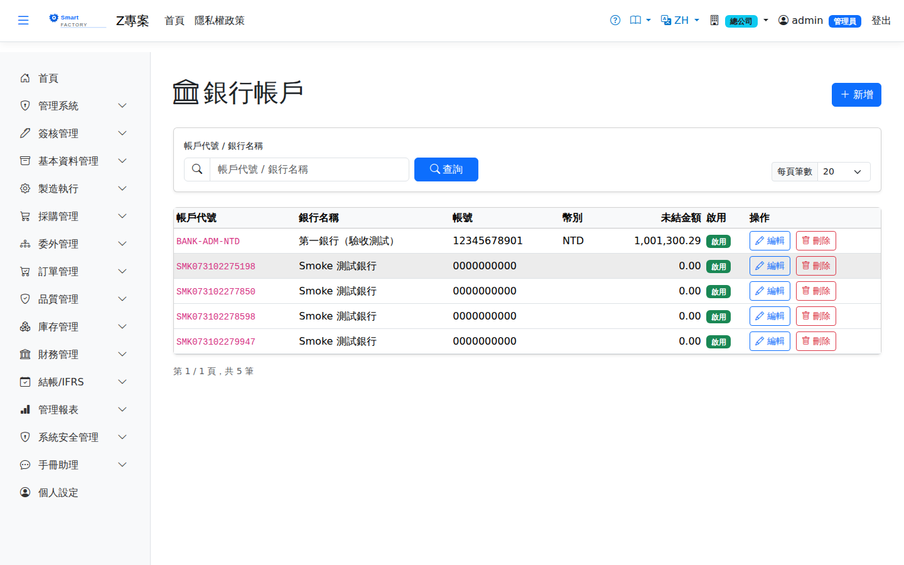

銀行帳戶Bank Account
路由：/BankAccount | 收付款帳戶與即時餘額Route: /BankAccount | Payment and receipt accounts with live balances
維護公司銀行帳戶（幣別、帳號），餘額由每筆付款/收款確認即時更新，帳戶餘額變動皆可追溯到單據。Maintains the company's bank accounts (currency, account number); the balance is updated as each payment or receipt is confirmed, and every movement can be traced back to a document.

銀行帳戶畫面截圖（示意，實際欄位/資料依權限與查詢條件而異）Bank account screenshot (illustrative; actual fields and data vary by permission and query criteria)
查詢Search
1
查詢列輸入條件後點「查詢」；欄位標題可點擊排序，清單下方有分頁導航。Enter your criteria on the query bar and click "Search"; column headers can be clicked to sort, and the paging controls sit below the list.
欄位說明Field reference
查詢條件Query criteria
| 條件Condition | 說明Guide |
|---|---|
| 帳戶代號 / 銀行名稱Account / Bank Name | 關鍵字模糊比對，兩者擇一輸入即可Partial keyword match; either one on its own is enough |
帳戶欄位Account fields
| 欄位Field | 說明Guide |
|---|---|
| 帳戶代號Account ID | 必填Required 系統內唯一識別，建立後不可修改；付款／收款單以此指定資金進出帳戶Unique identifier in the system, not editable after creation; payments and receipts use it to name the account the money moves through |
| 銀行名稱Bank Name | 必填Required 開戶銀行全名Full name of the bank |
| 帳號Account No. | 必填Required 銀行帳號Bank account number |
| 幣別Currency | 必填Required 該帳戶的記帳幣別；付款／收款單的幣別須與此一致Currency the account is kept in; payments and receipts must use the same currency |
| 未結金額Outstanding amount | 系統即時計算的帳戶餘額，隨付款確認扣減、收款確認增加，不可手動修改The balance calculated live by the system, reduced when a payment is confirmed and increased when a receipt is confirmed; it cannot be edited by hand |
| 啟用Active | 停用後無法在新的付款／收款單中選取，既有單據不受影響Once inactive, it cannot be chosen on new payments or receipts; existing documents are unaffected |
| 備註Notes | 補充說明（分行、用途等）Notes (branch, purpose …) |
相關畫面Related screens
注意：Note:餘額由系統維護，請勿以調整方式直接改餘額；差異請以收付款單據沖正。 The balance is maintained by the system — never change it directly with an adjustment; correct any difference with a payment or receipt document.